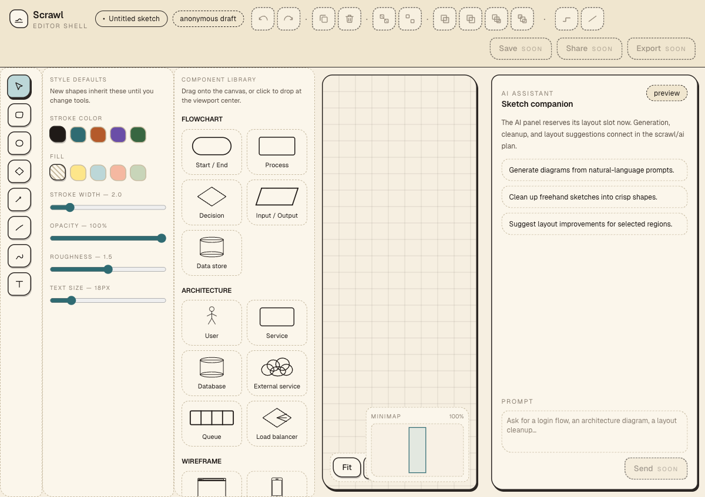
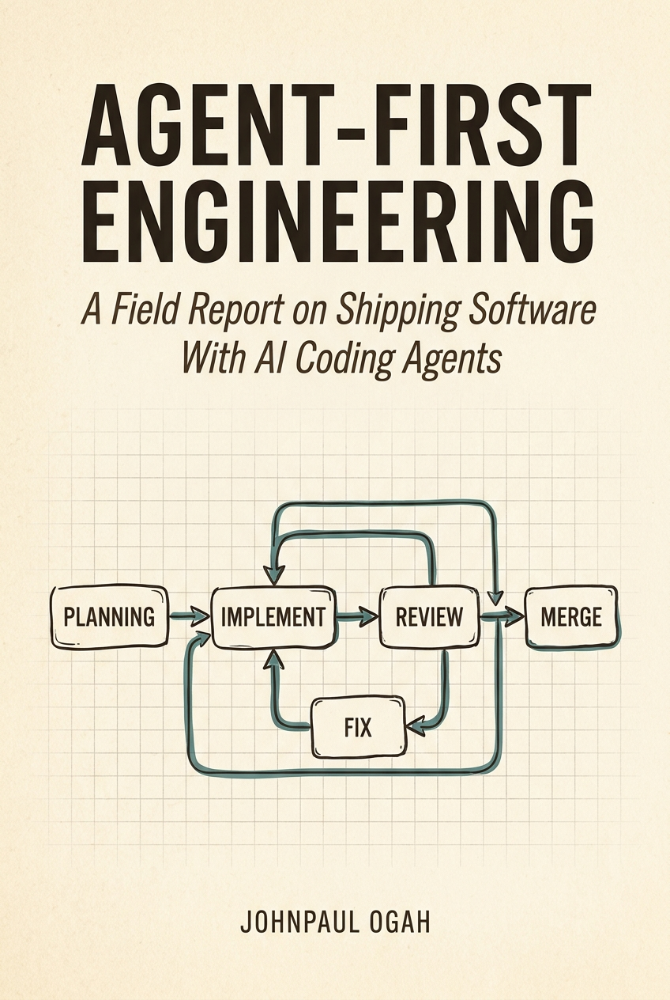

Fork-and-Go is an open-source agent-first engineering harness. It wraps your coding agent in planning, review, fix, e2e-verify, and merge-check phases — and drives each execution plan from an approved spec to a merged pull request without human intervention between phases. Companion to the book Agent-First Engineering: A Field Report on Shipping Software With AI Coding Agents.
Between "the code is written" and "the PR is merged" sits a grinding tower of tasks — diff review, severity judgment, test gaps, formatting drift, PR body authorship, CI wait, review-comment triage, merge-conflict resolution, e2e verification — that nobody wants to automate because each one looks trivial and all of them together look impossible.
Fork-and-Go automates the tower. Six phases, gated by prompts and a plan graph, orchestrated by a daemon that survives rate limits, races, and GitHub 500s. You supply a plan; it ships a PR.
Review findings + failing Playwright tests feed back into Fix. Up to 5 passes per plan. Convergence, then merge-check labels for auto-merge.
Fork the repo, bootstrap, run your first plan. The harness expects Node 22+, gh CLI with
auth, and the Codex or Claude Code CLI configured.
# 1. Fork or clone git clone https://github.com/jpogah/fork-and-go.git my-app cd my-app && npm install # 2. Write your first plan (docs/exec-plans/active/0001-*.md) # — see the template in docs/exec-plans/active/TEMPLATE.md # 3. Start the orchestrator daemon ./scripts/orchestrator.sh start-bg # 4. Resume — it picks up the earliest eligible plan automatically curl -X POST http://localhost:4500/resume # 5. Watch it ship tail -f .orchestrator/orchestrator.log
Scrawl is a collaborative whiteboard with hand-drawn aesthetic and AI diagram generation. Every feature — canvas, selection transforms, smart connectors, component palette, AI connectors, chat panel — was shipped by Fork-and-Go driving Codex through the six-phase harness. The repo is private (Scrawl is the case study, not the reference implementation), but the live demo is browseable today.


A Field Report on Shipping Software With AI Coding Agents
The field report that produced this harness. Seventeen chapters on agent orchestration, harness engineering, and the specific frictions that shaped every primitive in Fork-and-Go. Grounded in three public sources: Google's Agents whitepaper (2024), Anthropic's Harness Design post (2025), and OpenAI's Harness Engineering post (2026).
By Johnpaul Ogah — engineering leader, Austin, Texas.